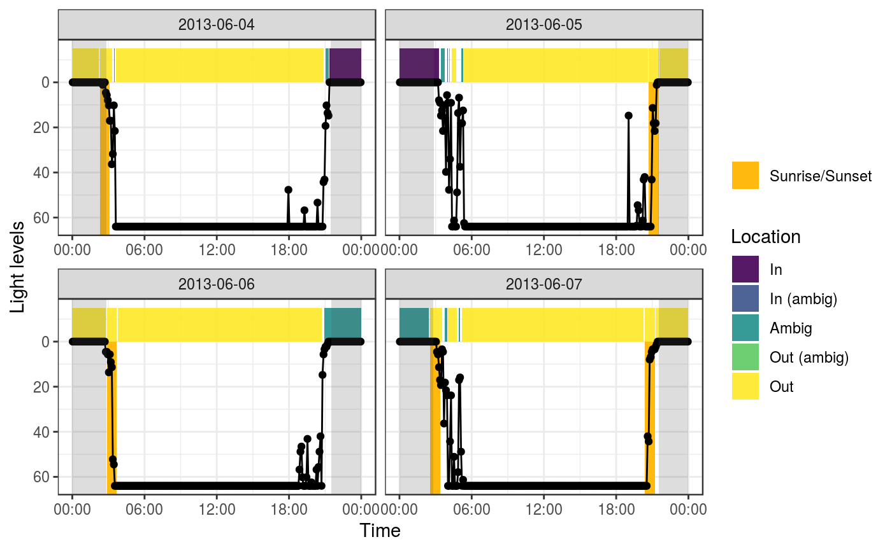
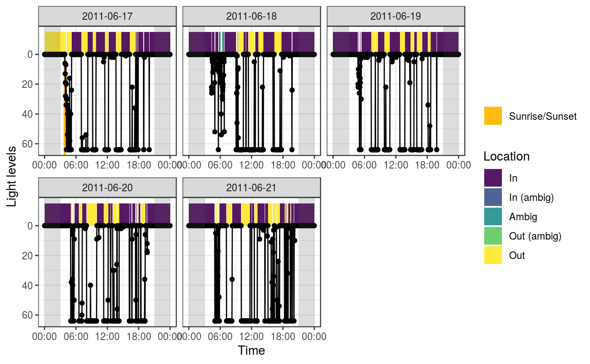
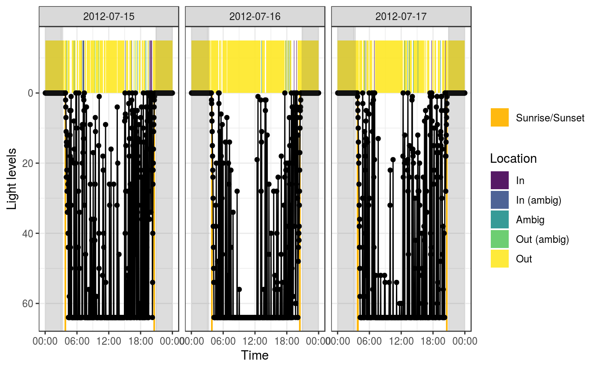

Summarize light into bouts of cavity use
cavity_detect(data, sun, loc = NULL, n = 2, thresh_dark = 1, thresh_light = 60, ambig_dark = 10, ambig_light = 25, gap_cutoff = 10)
| data | Data frame. Raw light data. Requires two columns: "time" and "light" |
|---|---|
| sun | Data frame. Detected sunrise and sunset events, output of
|
| loc | Numeric vector. Longitude and Latitude of the observations (if not in the data, this must be provided). |
| n | Numeric. Number of points before and after a given observation to use in the calculation of cavity use (similar to a running mean) |
| thresh_dark | Numeric. Light threshold for "in" (see details) |
| thresh_light | Numeric. Light threshold for "out" (see details) |
| ambig_dark | Numeric. Light threshold for "in_ambig" (see details) |
| ambig_light | Numeric. Light threshold for "out_ambig" (see details) |
| gap_cutoff | Numeric. Minimum number of sequential missing observations defining a "gap" in the data record |
A data frame summarizing light into bouts of cavity use, each with a start, end, and location designation.
Thresholds This function assigns points to four categories based on their light intensity: "in", "out", "in_ambig", "out_ambig", "ambig". The thresholds are used to determine which category a point is assigned to.
in: Light <= thresh_dark
out: Light >= thresh_light
in_ambig: thresh_dark < Light <= ambig_dark
out_ambig: thresh_light > Light >= ambig_light
ambig: ambig_dark < Light < ambig_light
These points are then smoothed into bouts of cavity use. The argument
n, determines how many points before and after a given point, should
be used to influence the final cavity use designation. For example, an
"ambig" point, surrounded by "in" points will be assigned as part of an "in"
cavity use bout. However, 3 "ambig" points in a row will result in an
"ambig" bout. How many points to smooth over is affected by n. The
argument gap_cutoff determines the maximum number of minutes between
observations allowed before a bout is split and a gap in the data is
introduced.
To detect cavity use in the evening and overnight, this function relies on
detections of sunrise and sunset (detected with sun_detect).
If you really don't want to use this, assign an empty data frame, but be
aware that your overnight locations will always be defined as "in", which,
in many cases would be incorrect.
sun = data.frame()
# Single individual s <- sun_detect(wtsp) e <- cavity_detect(wtsp, sun = s) cavity_plot(wtsp, cavity = e, sun = s)# Use map from purrr package for multiple individuals library(dplyr)#> #>#> #> #>#> #> #>library(tidyr) library(purrr) d <- flicker_mult %>% nest(-id, .key = "light_data") %>% mutate(s = map(light_data, ~sun_detect(.)), e = map2(light_data, s, ~cavity_detect(.x, sun = .y))) d#> # A tibble: 2 x 4 #> id light_data s e #> <chr> <list> <list> <list> #> 1 flicker_c <tibble [3,600 × 5]> <tibble [1 × 6]> <tibble [213 × 9]> #> 2 flicker_b <tibble [2,160 × 5]> <tibble [6 × 6]> <tibble [316 × 9]>